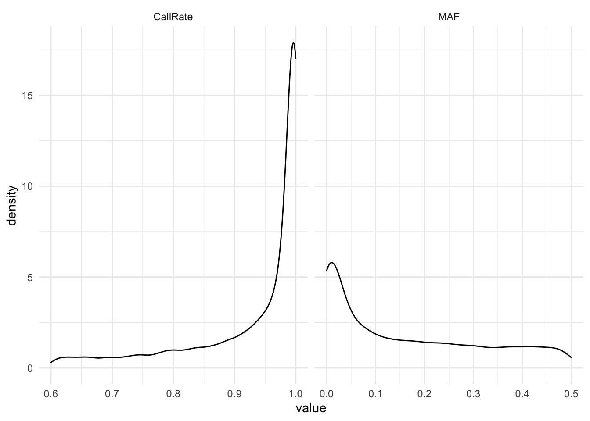

Last updated: 2022-06-02
Checks: 6 1
Knit directory: EMBRAPAImputation2022/
This reproducible R Markdown analysis was created with workflowr (version 1.7.0). The Checks tab describes the reproducibility checks that were applied when the results were created. The Past versions tab lists the development history.
The R Markdown file has unstaged changes. To know which version of the R Markdown file created these results, you’ll want to first commit it to the Git repo. If you’re still working on the analysis, you can ignore this warning. When you’re finished, you can run wflow_publish to commit the R Markdown file and build the HTML.
Great job! The global environment was empty. Objects defined in the global environment can affect the analysis in your R Markdown file in unknown ways. For reproduciblity it’s best to always run the code in an empty environment.
The command set.seed(20220303) was run prior to running the code in the R Markdown file. Setting a seed ensures that any results that rely on randomness, e.g. subsampling or permutations, are reproducible.
Great job! Recording the operating system, R version, and package versions is critical for reproducibility.
Nice! There were no cached chunks for this analysis, so you can be confident that you successfully produced the results during this run.
Great job! Using relative paths to the files within your workflowr project makes it easier to run your code on other machines.
Great! You are using Git for version control. Tracking code development and connecting the code version to the results is critical for reproducibility.
The results in this page were generated with repository version 95ddcaf. See the Past versions tab to see a history of the changes made to the R Markdown and HTML files.
Note that you need to be careful to ensure that all relevant files for the analysis have been committed to Git prior to generating the results (you can use wflow_publish or wflow_git_commit). workflowr only checks the R Markdown file, but you know if there are other scripts or data files that it depends on. Below is the status of the Git repository when the results were generated:
Ignored files:
Ignored: .Rhistory
Ignored: .Rproj.user/
Ignored: data/DArT2018/
Ignored: data/DArT2020/
Ignored: data/DArT2022/
Ignored: data/GBS/
Ignored: output/DArT2022/
Untracked files:
Untracked: DArTCommonMkrs.log
Untracked: MkrsRefandStudyPop.txt
Untracked: analysis/CheckImp.Rmd
Untracked: analysis/Duplicates.Rmd
Untracked: analysis/ImputationEMBRAPA_DCas22_6902.Rmd
Untracked: analysis/PrepareGenData.Rmd
Untracked: code/.DS_Store
Untracked: code/plink/
Untracked: data/AllDArTDuplicates.txt
Untracked: data/CommonMkrsGBSDArT
Untracked: data/CommonMkrsGBSDArT.txt
Untracked: data/CommonMkrsGBSDArTIssues
Untracked: data/DArTClones.csv
Untracked: data/DArTDupDiscordanceIndex.csv
Untracked: data/DArTDuplicates1.txt
Untracked: data/DArTDuplicates2.txt
Untracked: data/DArTDuplicates3.txt
Untracked: data/DArTDuplicates4.txt
Untracked: data/DArTGPInfo.csv
Untracked: data/DArTGPInfo.xlsx
Untracked: data/DArTGPInfo2.csv
Untracked: data/DArTGPInfo2.xlsx
Untracked: data/DArTGenotypingPlates/
Untracked: out.log
Untracked: output/AllChrDCas22_6902_StudyPopimputed.vcf.gz
Untracked: output/AllChrDCas22_6902_StudyPopimputed.vcf.gz.tbi
Untracked: output/AllChrGBSandDArTsitesCommonClones_RefPopImputed.vcf.gz
Untracked: output/AllChrGBSandDArTsitesCommonClones_RefPopImputed.vcf.gz.tbi
Untracked: output/BRTP_Phenotyping2022.txt
Untracked: output/DCas22_6902/
Untracked: output/DCas22_6902RefPopImputed.vcf.gz
Untracked: output/Dados GBS Atualizados.RData
Untracked: output/DadosGBSAtualizados.rds
Untracked: output/DadosGBSAtualizadosRenomeados.rds
Untracked: output/Duplicates/
Untracked: output/Figures/
Untracked: output/GBSDArTPCA.rds
Untracked: output/GmatrixDArTGS.rds
Untracked: output/GmatrixGBSandDArTGS.rds
Untracked: output/RefPop/
Untracked: output/StudyPop/
Unstaged changes:
Modified: .DS_Store
Modified: analysis/DArTImp.Rmd
Modified: analysis/GBS_DArTImp.Rmd
Modified: analysis/_site.yml
Modified: analysis/index.Rmd
Modified: data/.DS_Store
Modified: output/.DS_Store
Modified: output/out.log
Staged changes:
Modified: .DS_Store
New: analysis/DArTImp.Rmd
New: analysis/GBS_DArTImp.Rmd
Note that any generated files, e.g. HTML, png, CSS, etc., are not included in this status report because it is ok for generated content to have uncommitted changes.
These are the previous versions of the repository in which changes were made to the R Markdown (analysis/index.Rmd) and HTML (docs/index.html) files. If you’ve configured a remote Git repository (see ?wflow_git_remote), click on the hyperlinks in the table below to view the files as they were in that past version.
| File | Version | Author | Date | Message |
|---|---|---|---|---|
| Rmd | 95ddcaf | LucianoRogerio | 2022-05-05 | Imputation of DArT Genotypic data |
| html | 95ddcaf | LucianoRogerio | 2022-05-05 | Imputation of DArT Genotypic data |
| Rmd | 8204f0e | LucianoRogerio | 2022-03-03 | Start workflowr project. |
Diversity Array Technology LTDA joint all the genotyping data from the four Genotyping Orders that EMBRAPA requested during these six or seven years in one huge file.
So let’s check what we got at the DArT report for EMBRAPA DArT genotyping of 2022
library(genomicMateSelectR)
dir("data/DArT2022")
nskipvcf <- 2
nskipcounts <- 2
VCF2022 <- read.table(here::here("data", "DArT2022", "Report_6902_VCF_Ref_Version6.txt"),
sep = "\t", header = T, skip = nskipvcf, comment.char = "",
check.names = F)
Counts2022 <- read.table(here::here("data", "DArT2022",
"SEQ_SNPs_counts_0_Target_extend_Ref.csv"),
sep = ",", header = T, skip = nskipcounts, check.names = F)
Counts2022[1:10,1:50]
VCF2022[1:10,1:30]
genomicMateSelectR::convertDart2vcf(dartvcfInput = here::here("data", "DArT2022", "Report_6902_VCF_Ref_Version6.txt"),
dartcountsInput = here::here("data", "DArT2022", "SEQ_SNPs_counts_0_Target_extend_Ref.csv"),
nskipvcf = 2, nskipcounts = 2,
outName = "output/DCas22_6902", ncores = 1)Add the VCF header to the DArT VCF file
system(paste0("bgzip -d -@ 7 output/DArT2022/DCas22_6902_DArTseqLD_AllSites_AllChrom_raw.vcf.gz > ",
"output/DArT2022/DCas22_6902_DArTseqLD_AllSites_AllChrom_raw.vcf"))
DArTVCFFileSel <- read.table(file = here::here("output", "DArT2022",
"DCas22_6902_DArTseqLD_AllSites_AllChrom_raw.vcf"),
sep = "\t", header = T, comment.char = "", check.names = F)
header <- c("##fileformat=VCFv4.0",
"##FORMAT=<ID=GT,Number=1,Type=String,Description=\"Genotype\">",
"##FORMAT=<ID=AD,Number=.,Type=Integer,Description=\"Allelic depths for the reference and alternate alleles in the order listed\">",
"##FORMAT=<ID=DP,Number=1,Type=Integer,Description=\"Read Depth (only filtered reads used for calling)\">",
"##FORMAT=<ID=PL,Number=3,Type=Float,Description=\"Normalized, Phred-scaled likelihoods for AA,AB,BB genotypes where A=ref and B=alt; not applicable if site is not biallelic\">")
write_lines(header, file = here::here("output", "DCas22_6902",
"DCas22_6902_DArTseqLD_AllSites_AllChrom_raw.vcf"),
append = F)
write.table(x = DArTVCFFileSel, file = here::here("output", "DCas22_6902",
"DCas22_6902_DArTseqLD_AllSites_AllChrom_raw.vcf"),
quote = F, row.names = F, append = T, col.names = T, sep = "\t")
system(paste0("bgzip -c -@ 7 output/DCas22_6902/DCas22_6902_DArTseqLD_AllSites_AllChrom_raw.vcf > ",
"output/DCas22_6902/DCas22_6902_DArTseqLD_AllSites_AllChrom_raw.vcf.gz"))library(here); library(tidyverse)
library(magrittr); library(dplyr)
## Parameters for the Filter function
inPath <- "output/"
inName <- "DCas22_6902_DArTseqLD_AllSites_AllChrom_raw"
outPath <- "output/"
outName <- "DCas22_6902_DArTseqLD_AllSites_AllChrom_rawFiltered"
FilterLuc <- function(inPath = NULL, inName, outPath = NULL, outName, CRthresh = 0.6){
system(paste0("vcftools --gzvcf ", inPath, inName, ".vcf.gz --freq2 --out ",
outPath, inName))
system(paste0("vcftools --gzvcf ", inPath, inName, ".vcf.gz --missing-site --out ",
outPath, inName))
INFO <- read.table(paste0(outPath, inName, ".frq"), stringsAsFactors = F,
header = F, skip = 1) %>%
rename(CHROM = V1, POS = V2, N_ALLELES = V3,
N_CHR = V4, FREQ1 = V5, FREQ2 = V6)
callrate <- read.table(paste0(outPath, inName, ".lmiss"), stringsAsFactors = F,
header = T) %>% dplyr::select(CHR, POS, N_DATA, F_MISS) %>%
mutate(CHROM = CHR,
CR = 1 - F_MISS,
.keep = "unused")
stats2filterOn <- left_join(INFO, callrate)
stats2filterOn %<>% dplyr::mutate(FREQ2 = as.numeric(FREQ2)) %>%
dplyr::mutate(MAF = ifelse(FREQ2 > 0.5,
yes = 1 - FREQ2, no = FREQ2)) %>%
dplyr::select(-FREQ1, -FREQ2)
MAFthresh <- (1/max(stats2filterOn$N_DATA, na.rm = T))**2
sitesPassingFilters <- stats2filterOn %>%
dplyr::filter(MAF >= MAFthresh, CR >= CRthresh) %>%
dplyr::select(CHROM, POS)
print(paste0(nrow(sitesPassingFilters), " sites passing filter"))
write.table(sitesPassingFilters, file = paste0(outPath, inName,
".sitesPassing"), row.names = F, col.names = F, quote = F)
system(paste0("vcftools --gzvcf ", inPath, inName, ".vcf.gz",
" ", "--positions ", outPath, inName, ".sitesPassing",
" ", "--recode --stdout | bgzip -c -@ 24 > ", outPath,
outName, ".vcf.gz"))
print(paste0("Filtering Complete: ", outName))
}
FilterLuc(inPath=inPath, inName=inName,
outPath=outPath, outName=outName,
CRthresh = 0.6)cd output/DArT2022
scp lbraatz@cbsulm35.biohpc.cornell.edu:/workdir/lbraatz/DCas22_6902/output/DCas22_6902_DArTseqLD_AllSites_AllChrom_rawFiltered.vcf.gz .
scp lbraatz@cbsulm35.biohpc.cornell.edu:/workdir/lbraatz/DCas22_6902/output/DCas22_6902_DArTseqLD_AllSites_AllChrom_raw.lmiss .
scp lbraatz@cbsulm35.biohpc.cornell.edu:/workdir/lbraatz/DCas22_6902/output/DCas22_6902_DArTseqLD_AllSites_AllChrom_raw.frq .
cd ../..library(tidyverse); library(here)── Attaching packages ─────────────────────────────────────── tidyverse 1.3.1 ──✔ ggplot2 3.3.6 ✔ purrr 0.3.4
✔ tibble 3.1.7 ✔ dplyr 1.0.9
✔ tidyr 1.2.0 ✔ stringr 1.4.0
✔ readr 2.1.2 ✔ forcats 0.5.1── Conflicts ────────────────────────────────────────── tidyverse_conflicts() ──
✖ dplyr::filter() masks stats::filter()
✖ dplyr::lag() masks stats::lag()here() starts at /Users/lbd54/Documents/GitHub/EMBRAPAImputation2022library(reactable)
INFO <- read.table(here::here("output", "DArT2022", "DCas22_6902_DArTseqLD_AllSites_AllChrom_raw.frq"),
stringsAsFactors = F,
header = F, skip = 1) %>%
rename(CHROM = V1, POS = V2, N_ALLELES = V3,
N_CHR = V4, FREQ1 = V5, FREQ2 = V6)
callrate <- read.table(here::here("output", "DArT2022", "DCas22_6902_DArTseqLD_AllSites_AllChrom_raw.lmiss"),
stringsAsFactors = F,
header = T) %>% dplyr::select(CHR, POS, N_DATA, F_MISS) %>%
mutate(CHROM = CHR,
CR = 1 - F_MISS,
.keep = "unused")
stats2filterOn <- left_join(INFO, callrate)Joining, by = c("CHROM", "POS")stats2filterOn %<>% dplyr::mutate(FREQ2 = as.numeric(FREQ2)) %>%
dplyr::mutate(MAF = ifelse(FREQ2 > 0.5,
yes = 1 - FREQ2, no = FREQ2)) %>%
dplyr::select(-FREQ1, -FREQ2)
MAFthresh <- (1/max(stats2filterOn$N_DATA, na.rm = T))**2
stats2filterOn %<>% filter(!is.na(CHROM), CR >= 0.6, MAF >= MAFthresh) %>%
select(CR, MAF) %>% rename(CallRate = CR) %>% reshape2::melt(.)No id variables; using all as measure variablesstats2filterOn %>% ggplot(aes(x= value)) +
geom_density() + facet_grid(~variable, scales = "free_x") + theme_minimal()
| Version | Author | Date |
|---|---|---|
| 95ddcaf | LucianoRogerio | 2022-05-05 |
require(furrr); plan(multisession, workers = 18)
options(future.globals.maxSize=+Inf); options(future.rng.onMisuse="ignore")
vcfIn<-here::here("output/","DCas22_6902_DArTseqLD_AllSites_AllChrom_rawFiltered.vcf.gz")
filters<-"--minDP 4 --maxDP 50" # because using GT not PL for impute (Beagle5)
outPath<-here::here("output/")
outSuffix<-"DCas22_6902_DArTseqLD_AllSites_AllChrom_rawFiltered"
future_map(1:18,
~genomicMateSelectR::splitVCFbyChr(Chr=.,
vcfIn=vcfIn,filters=filters,
outPath=outPath,
outSuffix=outSuffix))
plan(sequential)| Pre | Post | ||
|---|---|---|---|
| MAF | \(≥(2/7827)\) | MAF | \(≥(2/7827)\) |
| CR | \(≥0.6\) | HWE | \(P_{HWE}≥10^{-20}\) |
5,914 SNPs Markers from 7,827 clones
| Chr | N˚Mkrs | Chr | N˚Mkrs | Chr | N˚Mkrs |
|---|---|---|---|---|---|
| Chr 1 | 674 | Chr 7 | 216 | Chr 13 | 261 |
| Chr 2 | 369 | Chr 8 | 294 | Chr 14 | 380 |
| Chr 3 | 372 | Chr 9 | 262 | Chr 15 | 297 |
| Chr 4 | 371 | Chr 10 | 301 | Chr 16 | 219 |
| Chr 5 | 337 | Chr 11 | 317 | Chr 17 | 305 |
| Chr 6 | 379 | Chr 12 | 285 | Chr 18 | 275 |
| Pre | Post | ||
|---|---|---|---|
| MAF | \(≥(2/7827)\) | MAF | \(≥(2/7827)\) |
| CR | \(≥0.6\) | HWE | \(P_{HWE}≥10^{-20}\) |
| HWE | \(P_{HWE}≥10^{-20}\) | ||
37,877 SNPs Markers from 7,827 clones
| Chr | N˚Mkrs | Chr | N˚Mkrs | Chr | N˚Mkrs |
|---|---|---|---|---|---|
| Chr 1 | 3,669 | Chr 7 | 1,256 | Chr 13 | 1,812 |
| Chr 2 | 2,717 | Chr 8 | 2,015 | Chr 14 | 2,105 |
| Chr 3 | 2,547 | Chr 9 | 2,117 | Chr 15 | 2,428 |
| Chr 4 | 1,982 | Chr 10 | 1,519 | Chr 16 | 1,692 |
| Chr 5 | 2,607 | Chr 11 | 2,109 | Chr 17 | 1,542 |
| Chr 6 | 2,497 | Chr 12 | 1,733 | Chr 18 | 1,530 |
sessionInfo()R version 4.1.2 (2021-11-01)
Platform: aarch64-apple-darwin20 (64-bit)
Running under: macOS Big Sur 11.6.6
Matrix products: default
BLAS: /Library/Frameworks/R.framework/Versions/4.1-arm64/Resources/lib/libRblas.0.dylib
LAPACK: /Library/Frameworks/R.framework/Versions/4.1-arm64/Resources/lib/libRlapack.dylib
locale:
[1] en_US.UTF-8/en_US.UTF-8/en_US.UTF-8/C/en_US.UTF-8/en_US.UTF-8
attached base packages:
[1] stats graphics grDevices utils datasets methods base
other attached packages:
[1] reactable_0.2.3 here_1.0.1 forcats_0.5.1 stringr_1.4.0
[5] dplyr_1.0.9 purrr_0.3.4 readr_2.1.2 tidyr_1.2.0
[9] tibble_3.1.7 ggplot2_3.3.6 tidyverse_1.3.1
loaded via a namespace (and not attached):
[1] Rcpp_1.0.8.3 lubridate_1.8.0 assertthat_0.2.1 rprojroot_2.0.3
[5] digest_0.6.29 utf8_1.2.2 plyr_1.8.7 R6_2.5.1
[9] cellranger_1.1.0 backports_1.4.1 reprex_2.0.1 evaluate_0.15
[13] highr_0.9 httr_1.4.3 pillar_1.7.0 rlang_1.0.2
[17] readxl_1.4.0 rstudioapi_0.13 whisker_0.4 jquerylib_0.1.4
[21] rmarkdown_2.14 labeling_0.4.2 htmlwidgets_1.5.4 munsell_0.5.0
[25] broom_0.8.0 compiler_4.1.2 httpuv_1.6.5 modelr_0.1.8
[29] xfun_0.30 pkgconfig_2.0.3 htmltools_0.5.2 tidyselect_1.1.2
[33] workflowr_1.7.0 fansi_1.0.3 crayon_1.5.1 tzdb_0.3.0
[37] dbplyr_2.1.1 withr_2.5.0 later_1.3.0 grid_4.1.2
[41] jsonlite_1.8.0 gtable_0.3.0 lifecycle_1.0.1 DBI_1.1.2
[45] git2r_0.30.1 magrittr_2.0.3 scales_1.2.0 cli_3.3.0
[49] stringi_1.7.6 farver_2.1.0 reshape2_1.4.4 fs_1.5.2
[53] promises_1.2.0.1 xml2_1.3.3 bslib_0.3.1 ellipsis_0.3.2
[57] generics_0.1.2 vctrs_0.4.1 tools_4.1.2 glue_1.6.2
[61] hms_1.1.1 fastmap_1.1.0 yaml_2.3.5 colorspace_2.0-3
[65] rvest_1.0.2 knitr_1.38 haven_2.5.0 sass_0.4.1